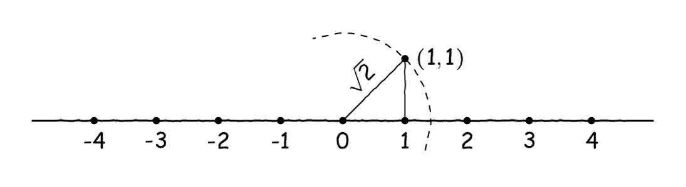
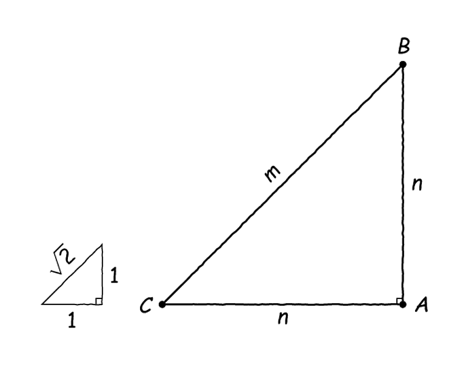
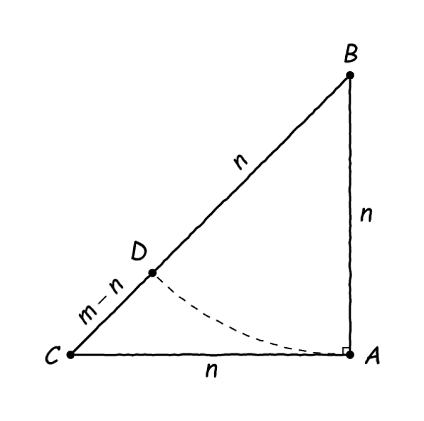
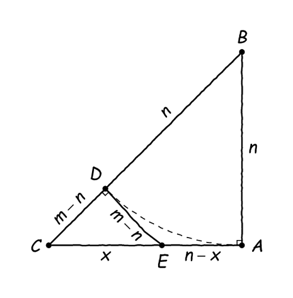
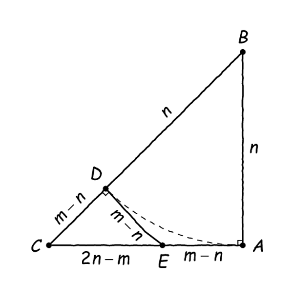
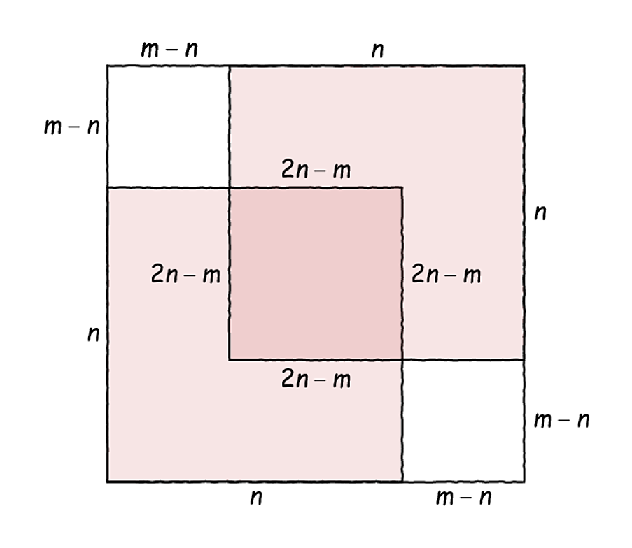
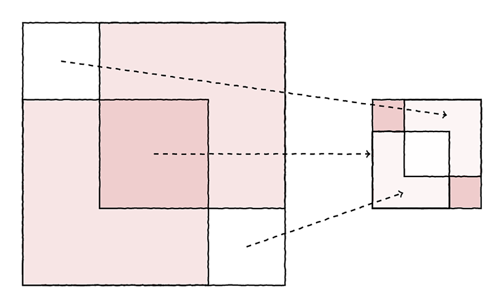
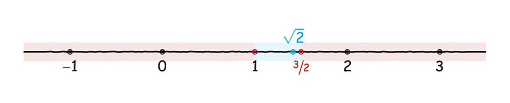

Και οι 7 Είναι Υπέροχες!#

το νησί των νεκρών του Karl Wilhelm Diefenbach.#
Τα έχουμε ξαναπεί και στο παρελθόν, τα μαθηματικά, ιδιαίτερα τα σχολικά, είναι συνυφασμένα με τις εποχές του χρόνου. Και μαζί με τη φθινοπωρινή δροσιά του Σεπτέμβρη έρχονται και οι άρρητοι. Γιατί, κάπου τώρα είναι που σκεφτόμαστε και προβληματιζόμαστε γιατί και πώς να διδάξουμε τη ρημάδα την απόδειξη της αρρητότητας του \(\sqrt{2}.\) Τους διδακτικούς στόχους αυτής της απόδειξης τους έχουμε συζητήσει αρκετά στο παρελθόν, όταν και ανακαλύψαμε, με περισσή έκπληξη, ότι η κλασική σχολική απόδειξη δεν είναι μία απόδειξη με απαγωγή σε άτοπο - ναι, ναι, αν δεν το θυμάστε, μπορείτε να κάνετε μία επανάληψη.
Άντε, πες ότι δεν αποδεικνύουμε έτσι την αρρητότητα του \(\sqrt{2}\) όπως στο σχολικό βιβλίο. Τότε, τι θα απογίνουμε χωρίς τους άρρητους; Πρέπει κάπως να αποδείξουμε στην τάξη ότι κάποιοι αριθμοί δεν μπορούν να γραφτούν ως κλάσματα και, άρα, ότι δεν είναι όλοι οι πραγματικοί αριθμοί ρητοί, οπότε έχει νόημα να μιλάμε για το σύνολο \(\mathbb{R}\) των πραγματικών αριθμών ως ένα γνήσιο υπερσύνολο του συνόλου \(\mathbb{Q}\) των ρητών.
Μπορούμε, άραγε, να παρουσιάσουμε μία κομψή απόδειξη της αρρητότητας του \(\sqrt{2}\) χωρίς να καταφύγουμε στην παραδοσιακή απόδειξη;
Η Κλασική Απόδειξη#
Την έχουμε ξαναδεί αναλυτικά αυτή την απόδειξη, αλλά για λόγους πληρότητας θα την παρουσιάσουμε κι εδώ, ως τη βασική περίπτωση. Λοιπόν, ας υποθέσουμε (προς άτοπο) ότι ο \(\sqrt{2}\) είναι ρητός, δηλαδή υπάρχουν δύο θετικοί ακέραιοι αριθμοί \(m,n\) έτσι ώστε:
και, επιπλέον, υποθέτουμε ότι το παραπάνω κλάσμα είναι ανάγωγο, δηλαδή ότι οι \(m,n\) έχουν μέγιστο κοινό διαιρέτη το 1. Υψώνουμε την παραπάνω ισότητα στο τετράγωνο - τι πιο φυσικό να κάνουμε με μία τετραγωνική ρίζα; - οπότε και έχουμε τα εξής:
Συνεπώς, ο \(m^2\) είναι άρτιος - ως πολλαπλάσιο του 2 - και άρα και ο \(m\) είναι άρτιος (αυτό θέλει απόδειξη, αλλά είναι εύκολο να το δείτε, καθώς το τετράγωνο ενός περιττού είναι περιττός - βέβαια, το σχολικό βιβλίο το θεωρεί λίγο έως πολύ προφανές ή γνωστό από κάπου αλλού). Τώρα, αφού ο \(m\) είναι άρτιος, έπεται άμεσα ότι \(m=2k\) για κάποιον θετικό ακέραιο \(k\) και άρα έχουμε το εξής:
Αυτό, όπως φαντάζεστε, σημαίνει ότι και ο \(n^2\) είναι άρτιος και άρα και ο \(n\) είναι άρτιος. Επομένως, με λίγο κόπο δείξαμε ότι οι \(m,n\) είναι αμφότεροι άρτιοι, άρα έχουν κοινό διαιρέτη το 2. Ωστόσο, είχαμε υποθέσει παραπάνω ότι έχουν μέγιστο κοινό διαιρέτη το 1, πράγμα που μας οδηγεί σε αντίφαση. Άρα δεν ισχύει η υπόθεσή μας ότι ο \(\sqrt{2}\) είναι ρητός, άρα, μαντέψτε, είναι άρρητος.
Κλασική, διαχρονική, σχολική (;) απόδειξη. Το βασικό της πρόβλημα όταν πάμε να τη διδάξουμε στην Α” Λυκείου είναι ότι επικαλείται απλά μεν, άγνωστα δε, αποτελέσματα από τη θεωρία αριθμών και, γενικότερα, έχει μία προσέγγιση πλήρως ξένη προς όσες αποδείξεις έχουν παρουσιαστεί μέχρι εκείνη τη στιγμή στη σχολική ύλη. Διότι, από εκεί που τα παιδιά έχουν μάθει να αποδεικνύουν ισότητες και, στο τσακίρ κέφι, και καμία ανισότητα, τώρα ξαφνικά αποδεικνύουμε ένα πιο περίπλοκο ισχυρισμό με αρκετά ασυνήθιστα μέσα.
Όμως, μη μακρηγορούμε, τα έχουμε πει όλα αυτά πολύ αναλυτικά εδώ. Ας περάσουμε τώρα σε άλλες, ίσως πιο κατάλληλες, σίγουρα όμως αρκετά ενδιαφέρουσες αποδείξεις.
Το Θυμάστε το Πυθαγόρειο;#
Ένα από τα πιο διάσημα επώνυμα θεωρήματα είναι το γνωστό και μη εξαιρετέο Πυθαγόρειο Θεώρημα. Ακόμα καλύτερα, το θεώρημα αυτό το διδάσκεται κανείς πρώτη φορά αρκετά νωρίς, στη Β” Γυμνασίου, οπότε όταν τα παιδιά έρχονται στην Α” Λυκείου, είναι ήδη μέρος του οπλοστασίου τους. Όμως, τι σχέση έχει το Πυθαγόρειο με τον \(\sqrt{2}\) άραγε;
Ρίξτε μια ματιά στο παρακάτω σχήμα:

Γνωστή κατασκευή, έτσι;#
Αυτό είναι η κλασική κατασκευή με κανόνα και διαβήτη της τετραγωνικής ρίζας του 2. Για να το πετύχουμε αυτό σχεδιάζουμε ένα ορθογώνιο τρίγωνο με κάθετες πλευρές μήκους 1, οπότε το Πυθαγόρειο Θεώρημα μας πληροφορεί ότι για την υποτείνουσά του, έστω \(c,\) ισχύει το εξής:
Δηλαδή, μας εγγυάται το Πυθαγόρειο Θεώρημα (και το αντίστροφό του) ότι μπορούμε να κατασκευάσουμε ένα ορθογώνιο τρίγωνο με τη μία του πλευρά να είναι ίση με \(\sqrt{2}.\)
Αλήθεια, μπορούμε να κατασκευάσουμε με κανόνα και διαβήτη κάθε ευθύγραμμο τμήμα; Αν απαντήσατε «ναι» ή αν δεν ξέρετε γιατί απαντήσατε «όχι», ρίξτε μια ματιά εδώ.
Τώρα, ας υποθέσουμε ότι ο \(\sqrt{2}\) είναι ρητός, δηλαδή ότι υπάρχουν ακέραιοι \(m,n\) τέτοιοι ώστε να ισχύει:
Επίσης, μπορούμε να υποθέσουμε κατά τα γνωστά ότι το παραπάνω κλάσμα είναι ανάγωγο, δηλαδή, ότι αριθμητής και παρονομαστής έχουν μέγιστο κοινό διαιρέτη ίσο με 1. Αυτό σημαίνει επίσης και ότι τόσο ο αριθμητής όσο κα ιο παρονομαστής είναι οι ελάχιστοι δυνατοί. Δηλαδή, ο αριθμός \(\sqrt{2}\) αν είναι ρητός, δεν μπορεί να γραφτεί ως κλάσμα με μικρότερο αριθμητή ή παρονομαστή - κάτι τέτοιο θα σήμαινε ότι το κλάσμα \(m/n\) μπορεί να απλοποιηθεί περαιτέρω, πράγμα που θα σήμαινε ότι δεν είναι ανάγωγο. Κρατήστε αυτήν την παρατήρηση για το μέλλον.
Τώρα, ας θεωρήσουμε ένα τρίγωνο με δύο πλευρές μήκους \(n\) και μία πλευρά μήκους \(m.\) Παρατηρήστε ότι σε αυτήν την περίπτωση έχουμε:
Με πιο απλά λόγια, έχουμε:
Συνεπώς, αυτό δεν είναι παρά ένα ορθογώνιο τρίγωνο, όπως μας πληροφορεί το αντίστροφο του Πυθαγορείου Θεωρήματος. Μάλιστα, αν παρατηρήσετε προσεκτικά, δεν είναι τίποτα άλλο από το αρχικό μας τρίγωνο με πλευρές πολλαπλασιασμένες κατά \(n\) - τον παρονομαστή, δηλαδή, του \(\sqrt{2}.\) Για την ακρίβεια, τα δύο τρίγωνα θα μοιάζουν κάπως έτσι:

Μεγαλώωωωωωνει!#
Αυτό το νέο τριγωνάκι έχει την εξαιρετική ιδιότητα όλες οι πλευρές του να είναι ακέραιοι αριθμοί. Πιάνουμε τώρα τον διαβήτη μας και μεταφέρουμε την πλευρά \(AB\) πάνω στην υποτείνουσα του τριγώνου, \(BC,\) οπότε και παίρνουμε το παρακάτω σχήμα:

Φανταστείτε ότι η πλευρά AB κρέμεται από το B κι εσείς την κλωτσάτε από τα δεξιά…#
Τώρα, φέρουμε μία κάθετη από το \(D\) στην \(BC\) η οποία τέμνει την \(AC\) στο \(E\) όπως φαίνεται και παρακάτω:

Σχεδιάσαμε ένα «ίδιο» τρίγωνο μέσα στο αρχικό!#
Παρατηρήστε ότι το τρίγωνο \(CDE\) είναι, πέρα από ορθογώνιο, και ισοσκελές, επομένως ισχύει ότι:
Μένει τώρα να υπολογίσουμε την υποτείνουσα αυτού του τριγώνου. Επειδή είναι ορθογώνιο, αυτό μπορεί να γίνει σχετικά εύκολα με τη βοήθεια του Πυθαγορείου Θεωρήματος:
Εδώ κάπου να θυμηθούμε ότι \(\sqrt{2}=m/n\) οπότε μπορούμε να κάνουμε την ακόλουθη αντικατάσταση:
Κι εδώ έρχεται ένα ακόμα μικρό τέχνασμα:
Ωραίο, ε; Απλώς εκμεταλλευτήκαμε τον ορισμό της τετραγωνικής ρίζας του 2, τίποτα πιο αθώο από αυτό. Έτσι, το σχήμα μας τελικά έχει τις ακόλουθες διαστάσεις:

Ωραία τα μετρήσαμε, αλλά τι καταφέραμε;#
Τώρα, ας συνοψίσουμε λίγο τις ιδιότητες του \(CDE:\)
Είναι ένα ορθογώνιο τρίγωνο με ακέραιες πλευρές (όλες τους είναι διαφορές ακεραίων).
Οι δύο κάθετες πλευρές του είναι ίσες.
Ως απόρροια της δεύτερης ιδιότητάς του, ο λόγος της υποτείνουσας προς τις κάθετες πλευρές του πρέπει να είναι ίσος με \(\sqrt{2}\) οπότε και έχουμε:
Από την υπόθεσή μας έχουμε επίσης και ότι:
Είχαμε, μάλιστα, πει, ότι οι \(m,n\) είναι οι ελάχιστοι αριθμητές και παρονομαστές στην παραπάνω γραφή, πράγμα που προφανώς έρχεται σε αντίφαση ότι εμείς γράψαμε τον \(\sqrt{2}\) με αριθμητή \(m-n<m.\) Συνεπώς, έχουμε αποδείξει ότι ο \(\sqrt{2}\) δεν μπορεί να είναι ρητός, άρα είναι άρρητος.
Ωραία απόδειξη, γεωμετρική, με αναφορές κυρίως σε απλές κατασκευές από τη σχολική γεωμετρία, ωστόσο πόσο κατάλληλη είναι μία τέτοια απόδειξη για την τάξη; Η αλήθεια είναι ότι αυτό «παίζεται». Πράγματι, η απόδειξη αυτή φέρνει κοντά γνωστές πλην όμως ασύνδετες έννοιες για τα παιδιά της Α” Λυκείου, όπως το Πυθαγόρειο Θεώρημα και τις κατασκευές με κανόνα και διαβήτη, στα χωράφια της άλγεβρας. Όπως και κάθε τέτοια νέα σύνδεση, έτσι κι αυτή είναι ένα δίκοπο μαχαίρι, αφού εξαρτάται πολύ από το τμήμα που έχει κανείς στα χέρια του και τη διαχείριση μέσα στην τάξη το αν η απόδειξη θα παρακινήσει τα παιδιά ή απλά θα την κοιτάζουν όλο απορία.
Από την άλλη, ίσως η παραπάνω απόδειξη να βγάζει περισσότερο νόημα καθώς κανείς προχωρά στο σχολικό έτος. Ίσως είναι νωρίς τις πρώτες εβδομάδες, μέσα σε όλη την αναταραχή που φέρνει η άλγεβρα της Α” Λυκείου στο μαθηματικό οικοδόμημα των μαθητών να έρθει και μία κομψή, μεν, αλλά πλατιά ως προς τα μέσα της απόδειξη. Βέβαια, από την άλλη μεριά, ακριβώς αυτό το πλάτος μας δίνει τις απαραίτητες αφορμές να συζητήσουμε στην τάξη πώς δουλεύουν τα μαθηματικά, τονίζοντας αυτόν τον διαθεματικό χαρακτήρα τους - καταλήξαμε σε μία απόδειξη περί αριθμών μέσα από την αξιοποίηση της ομοιότητας τριγώνων και το Πυθαγόρειο Θεώρημα, πραγμάτων που σπάνια εμφανίζονται σε ένα τμήμα άλγεβρας.
Στο τέλος της ημέρας, η απόδειξη αυτή ίσως να μην είναι απλούστερη από την κλασική απόδειξη που έχει το σχολικό βιβλίο για την αρρητότητα του \(\sqrt{2},\) είναι όμως μία απόδειξη που δεν επικαλείται πράγματα που τα παιδιά δεν έχουν διδαχθεί στο παρελθόν. Κι αυτό της το χαρακτηριστικό είναι αρκετά ενδιαφέρον από μόνο του.
Πέφτοντας στο Διηνεκές#
Η απόδειξη που συζητήσαμε μόλις πριν από λίγες γραμμές (και η οποία αποδίδεται στον Tom M. Apostol) κρύβει πολύ περίτεχνα μία απειρία μέσα της. Αυτήν εδώ την απειρία θα προσπαθήσουμε να βγάλουμε χειρουργικά με την επόμενη απόδειξή μας. Θα εργαστούμε πάλι με μία «σχολική» απαγωγή σε άτοπο, όπως και παραπάνω.
Τι διαφορά έχει η «σχολική» με την κανονική απαγωγή σε άτοπο; Αν δε θυμάστε, ρίξτε μια ματιά εδώ.
Ας υποθέσουμε, λοιπόν, ότι ο \(\sqrt{2}\) είναι ρητός, δηλαδή γράφεται στη μορφή:
όπου \(m,n\) είναι θετικοί ακέραιοι και, κατά τα γνωστά, έχουν μέγιστο κοινό διαιρέτη ίσο με 1. Τώρα, επειδή ισχύει ότι:
αν θέσουμε \(k_1=m-n>0,\) ισχύει ότι:
Αντικαθιστώντας στη σχέση \(m^2=2n^2\) παίρνουμε:
Τώρα, αν μαζέψουμε τα \(n^2\) μαζί βλέπουμε ότι:
Αγνοώντας το \(k_1^2>0\) στο δεξί μέλος, παίρνουμε την ακόλουθη ανισότητα:
Επομένως, αν θέσουμε \(k_2=n-2k_1>0\) έπεται ότι:
Αντικαθιστώντας στη σχέση \(n^2=2nk_1+k_1^2\) και κάνοντας λίγες πράξεις παίρνουμε:
Επομένως, επειδή \(k_2^2>0\) ισχύει ότι:
Αν θέσουμε \(k_3=k_1-2k_2>0\) τότε έχουμε:
Αντικαθιστώντας στη σχέση \(k_1^2=2k_1k_2+k_2^2\) έπειτα από λίγες πράξεις παίρνουμε τη σχέση:
Το βλέπετε πώς πάει, έτσι; Οι τρεις τελευταίες σχέσεις που βγάλαμε είναι οι εξής:
\(n^2=2nk_1+k_1^2\)
\(k_1^2=2k_1k_2+k_2^2\)
\(k_2^2=2k_2k_3+k_3^2\)
Επίσης, ισχύει ότι \(n>k_1>k_2>k_3>0.\) Αυτό μπορούμε να το συνεχίζουμε επ’άπειρον, καθώς συνέχεια εμφανίζεται η ίδια σχέση, οπότε μπορούμε να επαναλαμβάνουμε συνεχώς το ίδιο κόλπο. Έτσι, μπορούμε να βρούμε άπειρους στο πλήθος αριθμούς \(k_1,k_2,\ldots\) που να ικανοποιούν την παρακάτω σχέση:
Εδώ κάπου έχουμε ένα θέμα, καθώς έχουμε στριμώξει άπειρους στο πλήθος ακέραιους αριθμούς ανάμεσα στο \(0\) και το \(n,\) κάτι που, όπως φαντάζεστε, είναι λίγο αδύνατο. Επομένως, έχουμε καταλήξει σε αντίφαση με την υπόθεσή μας ότι ο \(\sqrt{2}\) είναι ρητός, άρα είναι άρρητος.
Αυτή η απόδειξη, αν και αμιγώς αλγεβρική στην παρουσίασή της, έχει τα ζόρια της. Αρχικά, οι πράξεις φαίνονται να έρχονται λίγο από το πουθενά, κι αυτό δεν είναι παράλογο, καθώς για να τεθούν στο σωστό τους πλαίσιο, θα έπρεπε κάποιος να έχει μιλήσει για την Ανθυφαίρεση, μία διαδικασία που (ίσως και καλώς) δεν παρουσιάζεται στη σχολική ύλη. Πέρα από αυτό, η διαδικασία αυτή αγκαλιάζει μέσα της ουσιαστικά το άπειρο στο παραπάνω παράδειγμα, αφού χρειάζεται να κατασκευάσουμε μία άπειρη ακολουθία θετικών ακεραίων αριθμών για να καταλήξουμε στην αντίφαση. Αυτό από μόνο του, βέβαια, ίσως δεν είναι και τόσο μεγάλο πρόβλημα, καθώς μας δίνει αφορμή να διαπραγματευτούμε λίγο τη ριζική διαφορά που έχουν οι άρρητοι με τους ρητούς και το πώς αυτή σχετίζεται με το άπειρο. Εντούτοις, και πάλι, μία συζήτηση τόσο νωρίς μέσα στη σχολική χρονιά μπορεί αρκετά εύκολα να αποπροσανατολίσει τα παιδιά.
Να σχολιάσουμε κάπου εδώ ότι, την ίδια ακριβώς απειρία που έχει η παραπάνω κατασκευή κρύβει και η απόδειξη του Apostol που παρουσιάσαμε παραπάνω, απλά τα γεωμετρικά μας επιχειρήματα, περνώντας κρυφά μέσα από την αρχή του ελαχίστου, μας επιτρέπουν να παρακάμψουμε την κατασκευή αυτής της άπειρης φθίνουσας ακολουθίας ισοσκελών ορθογωνίων τριγώνων με ακέραιες πλευρές (που είναι, σαφώς, αδύνατη). Οπότε, αν κανείς για κάποιους λόγους αμφιταλαντεύεται ανάμεσα στις δύο αυτές αποδείξεις, ίσως η πρώτη να είναι κάπως πιο εύπεπτη σε ένα σχολικό πλαίσιο.
Ποιος Μίλησε για Τετράγωνα;#
Η «φυσική» γεωμετρική ερμηνεία της τετραγωνικής ρίζας είναι αυτή της πλευράς τετραγώνου με δοσμένο εμβαδό. Επομένως, φαντάζεται κανείς, θα υπάρχει κάποια απόδειξη που να παντρεύει τετράγωνα με άλγεβρα και να καταλήγει κάπως έτσι στην αρρητότητα της τετραγωνικής ρίζας του δύο. Όποιος το φαντάζεται, πολύ καλά κάνει και το φαντάζεται. Το ίδιο φαντάστηκε κάποτε και ο Stanley Tennenbaum, ο οποίος και έδωσε μία απόδειξη αρκετά παρόμοια με του Apostol (αρκετά πριν τον Apostol, βέβαια). Ας υποθέσουμε όπως έχουμε συνηθίσει, ότι ο \(\sqrt{2}\) είναι ρητός και γράφεται ως ανάγωγο κλάσμα:
Τώρα, όπως έχουμε δει, αυτό σημαίνει και ότι:
Φανταστείτε τώρα δύο τετράγωνα πλευράς \(m\) και \(n\) αντίστοιχα, οπότε, το εμβαδό του μεγαλύτερου τετραγώνου θα είναι διπλάσιο από αυτό του δεύτερου. Τοποθετήστε τώρα εντός του μεγάλου τετραγώνου, πλευράς \(m,\) δύο τετράγωνα πλευράς \(n\) όπως φαίνεται στο παρακάτω σχήμα:

Πολλά μαζεύτηκαν ξαφνικά…#
Όπως βλέπετε, τα δύο τετράγωνα, αν και αθροιστικά έχουν το ίδιο εμβαδό με το μεγάλο, δεν μπορούν να το καλύψουν αφού επικαλύπτονται στο κέντρο του σχήματος. Αυτό το επικαλυπτόμενο τμήμα είναι ένα τετράγωνο με πλευρά \(2n-m\) (δηλαδή, ακέραια) και έχει εμβαδό \((2n-m)^2.\) Τα δύο τετράγωνα που περισσεύουν έχουν το καθένα εμβαδό \((m-n)^2.\)
Εδώ έρχεται το σημείο κλειδί της απόδειξης του Tennenbaum: αφού τα δύο κόκκινα τετράγωνα έχουν εμβαδό ακριβώς όσο και το μεγάλο τετράγωνο, θα πρέπει τα δύο τετράγωνα που μένουν ακάλυπτα στο παραπάνω σχήμα να έχουν μαζί εμβαδό ακριβώς όσο και το τμήμα της επικάλυψης. Έτσι, έχουμε ένα τετράγωνο με ακέραια πλευρά \(2n-m<m\) το οποίο έχει το ίδιο εμβαδό με δύο άλλα ίσα τετράγωνα με ακέραια πλευρά \(m-n<n\) έκαστο. Δηλαδή, έχουμε κάτι σαν το παρακάτω:

Κοίτα πώς τα έφερε ο Tennenbaum!#
Τώρα, έχοντας και την εμπειρία των προηγούμενων αποδείξεων, δύο δρόμοι ανοίγονται μπροστά μας:
Αφενός, μπορούμε να επαναλαμβάνουμε αυτήν την κατασκευή επ” άπειρον, αφού πάντοτε το αλληλοεπικαλυπτόμενο τμήμα έχει εμβαδό όσο ακριβώς και τα δύο τετράγωνα που δεν καλύπτονται. Έτσι, όμως, κατασκευάζουμε απείρως μικρά τετράγωνα με ακέραιες πλευρές, πράγμα που, ε, πώς να το κάνουμε, δε γίνεται.
Αφετέρου, μπορούμε να επικαλεστούμε πάλι την ελαχιστότητα των \(m,n\) όπως κάναμε και με την απόδειξη του Apostol. Αφού οι \(m,n\) είναι οι μικρότεροι θετικοί ακέραιοι έτσι ώστε να ισχύει η σχέση \(m^2=2n^2\) τότε δεν μπορούμε να κατασκευάσουμε τετράγωνα με ακέραιες πλευρές μικρότερες των \(m\) και \(n\) έτσι ώστε το ένα να έχει εμβαδό διπλάσιο του άλλου. Έλα, όμως, που ο Tennenbaum αυτό ακριβώς έκανε παραπάνω. Έτσι, καταλήγουμε απευθείας σε άτοπο, χωρίς να εμπλακεί πουθενά το άπειρο.
Το εντυπωσιακό με την απόδειξη του Tennenbaum είναι ότι μπορεί να μπει στην τάξη όχι από το παράθυρο, αλλά κανονικά, από την πόρτα. Διότι, αν κανείς το επιλέξει, μπορεί να μην αναφερθεί καθόλου στις διαστάσεις των πλευρών των επιμέρους τετραγώνων - η σχέση ανάμεσα στα εμβαδά προκύπτει με στοιχειώδη εποπτικά επιχειρήματα. Αυτό δίνει κατευθείαν το αβαντάζ της προσιτότητας σε αυτήν την απόδειξη έναντι των παραπάνω. Επίσης, αν κανείς επιλέξει να επιχειρηματολογήσει μέσω της ελαχιστότητας των δύο τετραγώνων - για να παρακάμψουμε και τα άπειρα - τότε, αποφεύγει και την απειρία που υπεισέρχεται φυσιολογικά σε αποδείξεις που έχουν να κάνουν με άρρητους.
Ακόμα και η ιδέα να ζωγραφίσουμε τετράγωνα δεν είναι και τόσο παράταιρη. Η κατασκευή ενός τετραγώνου δεδομένης πλευράς είναι η πλέον άμεση γεωμετρική ερμηνεία της ύψωσης στη δευτέρα, επομένως η παραπάνω απόδειξη φαίνεται να είναι ίσως πολύ καλή για να είναι αληθινή: κρύβει αρκετά αλλά όχι την ουσία. Ακόμα-ακόμα, με αφορμή αυτήν την απόδειξη, μπορεί κανείς να περάσει, σε μία δεύτερη ανάγνωση, στην εμφάνιση του απείρου (αγνοώντας, δηλαδή, την ελαχιστικότητα των \(m,n\) ) ή να παρουσιάσει ως εναλλακτική απόδειξη αυτήν του Apostol που έχει επίσης γεωμετρικό χαρακτήρα. Γενικά, αν δεν είναι σαφές, αυτή η απόδειξη φαίνεται να είναι κάτι σαν το πολυπόθητο καπάκι που ψάχναμε για τον τέντζερή μας - ή το ανάποδο, ερμηνεύεται αμφίδρομα η παροιμία.
Όσο πιο Μικρή Γίνεται#
Στις αποδείξεις που έχουμε παρουσιάσει ως τώρα έχουμε πει πολλά. Πάρα πολλά. Καιρός λοιπόν να συμμαζευόμαστε. Κατά τα γνωστά, υποθέτουμε ότι ο \(\sqrt{2}\) είναι ρητός, οπότε γράφεται ως ανάγωγο κλάσμα \(\sqrt{2}=m/n\) και άρα ισχύει η φοβερή σχέση:
Τώρα, όπως ξέρουμε από το δημοτικό ακόμα - άντε, από το γυμνάσιο - κάθε ακέραιος αριθμός (μεγαλύτερος κατ” απόλυτη τιμή του 1) γράφεται μοναδικά ως γινόμενο πρώτων αριθμών. Αυτό, σαφώς, ισχύει και για τους \(m,n.\) Παρατηρήστε τώρα κάτι εξαιρετικό: αν στο ανάπτυγμα σε γινόμενο πρώτων παραγόντων ενός αριθμού \(x\) το 2 (και οποιοσδήποτε πρώτος) εμφανίζεται, ας πούμε, 10 φορές, τότε στο ανάπτυγμα του \(x^2\) θα εμφανίζεται… 20 φορές.
Αυτό είναι άμεση απόρροια των ιδιοτήτων των δυνάμεων, ή, ακόμα πιο απλά, του γεγονότος ότι \(x^2=x\cdot x\) - άρα παίρνουμε 10 δυάρια από το ένα \(x\) και άλλα 10 από το άλλο. Προφανώς, το 10 δεν έχει κάτι ιδιαίτερο και αυτό ισχύει για οποιοδήποτε πλήθος εμφανίσεων ενός πρώτου παράγοντα.
Επομένως, για κάθε τετράγωνο ισχύει ότι το 2 θα εμφανίζεται στο ανάπτυγμά του ως πρώτος παράγοντας άρτιο πλήθος φορών. Έτσι, τόσο το \(m^2\) όσο και το \(n^2\) έχουν το 2 ως παράγοντα κάποιο άρτιο πλήθος φορών, έστω \(s\) και \(t,\) αντίστοιχα. Ωστόσο, προσέξτε ξανά τώρα τη βασική μας σχέση:
Αριστερά το 2 εμφανίζεται ως παράγοντας \(s\) φορές, ενώ δεξιά εμφανίζεται \(t+1\) φορές ( \(t\) από το \(n^2\) και μία ακόμα, όπως βλέπετε). Αυτό όμως σημαίνει ότι το αριστερό μέλος έχει το 2 ως παράγοντα άρτιο πλήθος φορών, ενώ το δεξί μέλος περιττό πλήθος φορών, άτοπο, καθώς τα δύο μέλη είναι ίσα.
Αυτή η απόδειξη, χωρίς την τόση επεξήγηση, δε χρειάζεται ούτε μισή γραμμή για να γραφτεί (μην το δοκιμάσετε, ψέματα είπαμε, θέλει 2-3 γραμμές). Και δεν επικαλείται τίποτα πέρα από τη μοναδικότητα του αναπτύγματος σε πρώτους παράγοντες κάθε μη τετριμμένου ακεραίου. Ακόμα καλύτερα, δουλεύει για κάθε πρώτο αριθμό και όχι μόνο για το 2. Κομψή και άμεση, χωρίς καμία περιστροφή, ωστόσο πάσχει από το ίδιο πρόβλημα που πάσχει και η κλασική σχολική απόδειξη: τη θεωρία αριθμών.
Πράγματι, αν και εδώ τα πράγματα είναι κάπως καλύτερα γιατί τα παιδιά έχουν συναντήσει στο παρελθόν το ανάπτυγμα σε πρώτους παράγοντες, συντρέχουν δύο βασικά προβλήματα:
αυτό ήταν πολύ παλιά, και,
πού την έχουν χρησιμοποιήσει ως τώρα πέρα από ασκήσεις υπολογισμού του αναπτύγματος ενός ακεραίου σε γινόμενο πρώτων;
Σαφώς, κανένα από τα παραπάνω προβλήματα δεν καθιστά την αξιοποίηση αυτής της απόδειξης στην τάξη αδύνατη, αλλά είναι πράγματα που πρέπει να λάβουμε υπόψιν. Ίσως ένα μικρό μασάζ στις μαθηματικές αναμνήσεις των μαθητών πριν από τη συζήτηση / ανακάλυψη της απόδειξης να είναι χρήσιμη, έτσι ώστε να είναι πιο εύκολο για τα παιδιά να ανακαλέσουν στη μνήμη τους τις σχετικές έννοιες - για παράδειγμα, μπορεί να μην θυμούνται καν ποιοι αριθμοί λέγονται πρώτοι. Ειδαλλιώς, θα είναι σαν να κάνουμε την απόδειξη μόνο για τη δική μας τέρψη.
Κύριε Cauchy;#
Τον ξέρετε τον Cauchy, παντού έχωνε τη μύτη του, μην αφήσει στην ησυχία τους τα μαθηματικά λίγο να ηρεμήσουν! Ε, αυτοσχεδιάζοντας κανείς με τις διάφορες σημειώσεις που μας έχει αφήσει μπορεί, λίγο δημιουργικά, να ανακατασκευάσει μία απόδειξη της αρρητότητας του \(\sqrt{2}\) που είναι αναπάντεχα απλή, συγκρινόμενη με τις προηγούμενες. Λοιπόν, αρχικά, είτε με τη βοήθεια της αριθμομηχανής είτε με λίγες πράξεις, μπορούμε να επαληθεύσουμε εύκολα ότι ισχύει το εξής:
Αυτό, είτε το πιστεύετε είτε όχι, είναι αρκετό για να δείξουμε ότι ο \(\sqrt{2}\) δεν είναι ρητός. Λοιπόν, κατά τα ειωθότα, ας υποθέσουμε ότι είναι ρητός και ότι γράφεται σαν ανάγωγο κλάσμα, \(\sqrt{2}=m/n.\) Τώρα, κάθε πραγματικός αριθμός \(x\) μπορεί να γραφτεί ως εξής:
Δηλαδή, κάθε πραγματικό αριθμό μπορούμε να τον γράψουμε ως άθροισμα ενός ακεραίου (που τον ονομάζουμε το ακέραιο μέρος του \(x\) ) και ενός μη αρνητικού πραγματικού αριθμού μικρότερου της μονάδας (που τον ονομάζουμε το δεκαδικό μέρος του \(x\) ). Αυτό είναι πιο απλό από ό,τι φαίνεται. Για παράδειγμα, ο αριθμός \(x=4.56\) γράφεται ως:
Ουάου. Τι είπαμε τώρα, ε; Λοιπόν, αυτό θα πρέπει να ισχύει και για τον \(\sqrt{2}\) συνεπώς θα υπάρχει ένας ακέραιος \(k\) και ένας μη αρνητικός και μικρότερος της μονάδας πραγματικός αριθμός \(s\) έτσι ώστε:
Είναι προφανές ότι \(k=1\) αφού είπαμε ότι η τετραγωνική ρίζα του 2 ζει εγκλωβισμένη ανάμεσα στο 1 και το 2, συνεπώς, πιο απλά, έχουμε:
Τώρα, παρατηρούμε ότι:
Δηλαδή, ο αριθμός \(ns\) είναι ακέραιος - ως διαφορά ακεραίων. Τώρα, παρατηρήστε επίσης ότι:
Δηλαδή, ο αριθμός \(ns\sqrt{2}\) είναι ακέραιος, ως διαφορά ακεραίων. Αν ο \(ns\) είναι διάφορος του μηδενός, τότε μπορούμε να γράψουμε:
Ωστόσο, ο \(ns\) είναι μικρότερος του \(n\) καθώς \(0\leq s<1\) οπότε καταλήγουμε σε μία αντίφαση, καθώς οι \(m,n\) είναι οι μικρότεροι θετικοί ακέραιοι τέτοιοι ώστε ο \(\sqrt{2}\) να γράφεται ως πηλίκο δύο ακεραίων. Επομένως θα πρέπει \(s=0\) δηλαδή θα πρέπει:
Αυτό τώρα είναι εμφανώς άτοπο, καθώς, τώρα τελευταία, \(1^2\neq 2.\)
Μικρή απόδειξη κι αυτή και αποφεύγει κάθε έννοια γεωμετρίας - αν για κάποιο λόγο θέλουμε να την αποφύγουμε. Ακόμα και οι έννοιες του ακεραίου και του δεκαδικού μέρους, αν και όχι πλήρως εντός της σχολικής ύλης, είναι αρκετά εύπεπτες και πιθανότατα μπορούν να χρησιμοποιηθούν σε μία σχολική τάξη έπειτα από μία μικρή εισαγωγή. Αυτό που ίσως φανεί προβληματικό είναι αυτή η «ένθετη» απαγωγή σε άτοπο όταν αποδεικνύουμε ότι \(s=0\) η οποία όμως μπορεί εύκολα να παρακαμφθεί αν από την αρχή υποθέσουμε ότι \(s>0\) θεωρώντας ως δεδομένο ότι \(\sqrt{2}>1.\) Επομένως, είναι ένας καλός ανταγωνιστής της απόδειξης του Tennenbaum, αν κανείς δεν τα πάει καλά με τη ζωγραφική.
Αν η τεχνική της παραπάνω απόδειξης σας θύμισε κάτι, έχετε δίκιο. Μπορείτε να φρεσκάρετε τη μνήμη σας εδώ.
Και μία Πρωτότυπη#
Αν ρίξετε μία ματιά σε όλα τα παραπάνω, θα δείτε ότι πρακτικά, μέσα από διαφορετικά χωράφια των μαθηματικών, αναμασάμε την ίδια αποδεικτική ιδέα. Αν γίνεται να ισχύει η σχέση \(m^2=2n^2\) για δύο θετικούς ακεραίους, τότε με κάποιον τρόπο καταλήγουμε σε μία αντίφαση. Μάλιστα, οι αποδείξεις αυτές, αν και κάπως ξένες, μοιάζουν ακόμα και στις λεπτομέρειές τους. Διατηρώντας εσκεμμένα τον ίδιο συμβολισμό ως τώρα, οι παραστάσεις \(m-n,2m-n\) και άλλες παρόμοιες εμφανίζονται με τον έναν ή τον άλλο τρόπο σχεδόν σε κάθε μία από τις προηγούμενες αποδείξεις. Μπορούμε, άραγε, να ξεφύγουμε από αυτή την ιδέα και να βρούμε μία απόδειξη που να μην είναι σαν όλες τις άλλες;
Ε, για να ρωτάμε, κάτι θα έχουμε στο μυαλό μας. Λοιπόν, ως τώρα εμείς δείχναμε ότι η τετραγωνική ρίζα του 2 δεν μπορεί να είναι ρητός πατώντας κυρίως πάνω στη θεωρία αριθμών ή τη γεωμετρία, δηλαδή πάνω σε αλγεβρικά χωράφια - λογικό, γιατί μιλάμε για έναν αριθμό, στο τέλος της ημέρας. Τώρα θα δείξουμε ότι ο \(\sqrt{2}\) δεν είναι ρητός γιατί είναι διαφορετικός από κάθε ρητό που ξέρουμε με έναν αμιγώς κατασκευάστικό τρόπο (χωρίς άτοπα και άλλα τέτοια). Προφανώς, δε θα τους πάρουμε έναν-έναν και θα τους εξετάσουμε, άλλωστε είναι ολίγον άπειροι. Αντιθέτως, θα ξεκινήσουμε ζωγραφίζοντας:

Τι τους θέλουμε όλους τους ρητούς;#
Όπως είναι εύκολο να αποδείξει κανείς, ισχύει ότι:
Συνεπώς, οι ρητοί που μας ενδιαφέρουν βρίσκονται όλοι στο παρακάτω σύνολο:
Θα δείξουμε ότι κανένας από τους αριθμούς αυτού του συνόλου δεν έχει τετράγωνο που να ισούται με 2 αποδεικνύοντας ότι όλοι οι αριθμοί αυτοί απέχουν από τον \(\sqrt{2}\) απόσταση γνήσια θετική. Αρχικά, παρατηρήστε ότι αν \(x=\frac{m}{n},\ m,n\in\mathbb{Z}_+\) είναι ένας αριθμός στο \(A\) τότε, όπως είδαμε και παραπάνω, δε γίνεται να ισχύει το παρακάτω:
Πράγματι, η ανάλυση σε πρώτους παράγοντες του αριστερού μέλους έχει άρτιο πλήθος από δυάρια, ενώ του δεξιού περιττό. Προσέξτε, μας έχουμε απαγορεύσει να προχωρήσουμε με απαγωγή σε άτοπο, επομένως εδώ δεν μπορούμε να αντιγράψουμε την αντίστοιχη απόδειξη που δώσαμε παραπάνω και να πούμε ότι η τετραγωνική ρίζα του 2 είναι άρρητος! Επομένως, απλώς γνωρίζουμε ότι \(m^2\neq 2n^2\) και επειδή μιλάμε για ακεραίους, ισχύει ειδικότερα ότι:
Αυτό είναι προφανές, καθώς δύο ακέραιοι που δεν είναι ίσοι απέχουν απόσταση τουλάχιστον μίας μονάδας μεταξύ τους. Τώρα, θεωρούμε την απόσταση του \(x\) από τον \(\sqrt{2}\) και κάνουμε λίγες πράξεις:
Δεν κάναμε και καμία σοφία: χρησιμοποιήσαμε τη συζυγή παράσταση για να εμφανίσουμε κάτι τετράγωνα και μετά εκμεταλλευτήκαμε την απόσταση των \(m^2\) και \(2n^2.\) Τώρα έρχεται το ζουμερό κομμάτι της απόδειξης. Αρχικά, παρατηρήστε ότι ο παρονομαστής του παραπάνω κλάσματος μπορεί να γραφτεί χωρίς απόλυτες τιμές - αφού όλοι οι όροι είναι θετικοί - ως εξής:
Θυμηθείτε ότι \(m/n<3/2\) επομένως μπορούμε να κάνουμε το εξής:
Επίσης, \(\sqrt{2}<3/2\) οπότε έχουμε:
Έτσι, έπεται άμεσα ότι:
Δηλαδή, όπως υποσχεθήκαμε, η τετραγωνική ρίζα του 2 απέχει από κάθε ρητό απόσταση μεγαλύτερη του μηδενός, και άρα δεν μπορεί να είναι ίση με κανέναν τους. Επομένως, μας μένει να είναι άρρητη.
Σαφώς, αυτή η απόδειξη δεν είναι και η καλύτερη δυνατή για να αποδείξει κανείς την αρρητότητα του \(\sqrt{2}\) στην τάξη, καθώς παρουσιάζει τεχνικές πολύ καινούργιες για τα παιδιά, επιφέροντας ίσως περισσότερη σύγχυση από την επιθυμητή. Εντούτοις, είναι αρκετά ενδιαφέρον ότι με στοιχειώδη αλγεβρικά τεχνάσματα μπορεί κανείς κατασκευαστικά να αποδείξει αυτό που τόση ώρα αποδεικνύουμε με απαγωγές σε άτοπο. Επίσης, αν το πάρει κανείς λίγο ψύχραιμα, αυτή η απόδειξη αξιοποιεί τεχνικές και «κόλπα» που διδάσκονται αργότερα στην ύλη της Α” Λυκείου, επομένως, ίσως μία δεύτερη επίσκεψη στην φύση της τετραγωνικής ρίζας του 2 να είναι επιβεβλημμένη!
Άρα;#
Είδαμε τόσες αποδείξεις μαζεμένες που ξεχάσαμε τι θέλαμε! Ποιο είναι το «ρεζουμέ», που λέμε, από όλα τα παραπάνω; Αρχικά, ότι ακόμα κι εκεί που νομίζουμε ότι ο τρόπος να κάνουμε το μάθημά μας είναι μοναδικός και, ίσως έπειτα από χρόνια δοκιμών, αξεπέραστος, μάλλον τα πράγματα δεν είναι έτσι. Τόσες αποδείξεις, τόσες διαφορετικές αφορμές για συζήτηση και τόσες τάξεις που περιμένουν την «καταλληλότερη» απόδειξη για την ύπαρξη των αρρήτων. Το ποια θα αξιοποιήσουμε είναι καθαρά δική μας υπόθεση (όπου: «μας» = διδάσκοντες + μαθητές). Γιατί, κάθε χρονιά, κάθε τάξη, κάθε παιδί είναι διαφορετικό, οπότε καλό είναι να είμαστε εφοδιασμένοι με όλα τα απαραίτητα εργαλεία.
Περισσότερα στο κοντινό μέλλον. Μέχρι τότε, καλό απομεσήμερο!